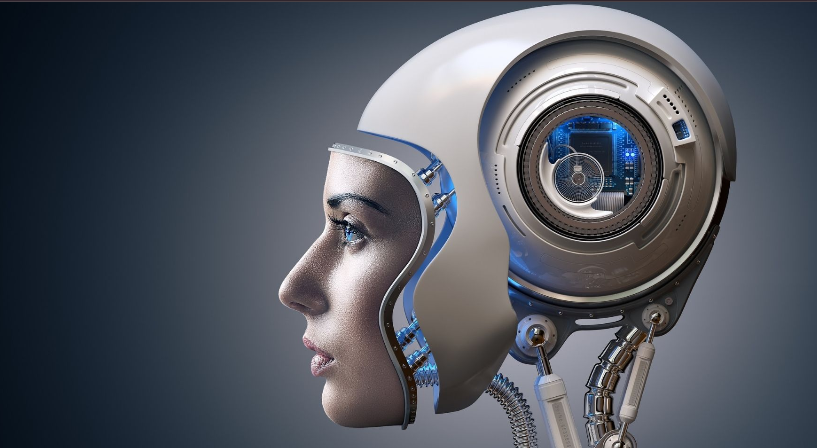

Diseñado por: BIANCA BANIAS
Los androides son robots diseñados para parecerse y, en algunos casos, comportarse de manera similar a los humanos. A medida que avanzan las tecnologías de inteligencia artificial, visión por computadora y robótica, los androides se vuelven cada vez más realistas y funcionales. Estos robots humanoides tienen una amplia gama de aplicaciones, desde la asistencia en el cuidado de personas mayores hasta la exploración espacial y la industria manufacturera.
Los primeros indicios de androides se encuentran en la mitología antigua, como el mito de Pigmalión y la leyenda de Talos. En el siglo XVI, Leonardo da Vinci diseñó planes para un autómata humanoide. La literatura, el cine y la televisión han popularizado la idea de androides, como en la obra "Frankenstein" de Mary Shelley y la serie "Star Trek".
La inteligencia artificial ha permitido a los androides aprender y adaptarse a su entorno. La visión por computadora ha mejorado la capacidad de los androides para reconocer objetos y rostros. La biomecánica ha contribuido a la creación de movimientos y expresiones más naturales en los androides.
Cuidado de personas mayores: Los androides pueden ayudar con tareas domésticas y proporcionar compañía a las personas mayores. Industria manufacturera: Los androides son utilizados en la automatización de fábricas para tareas de ensamblaje y soldadura. Exploración espacial: Los androides humanoides pueden ser enviados a lugares peligrosos o inaccesibles para los humanos. Esta idea se ha plasmado en un juego llamado Cyberpunk.
La creación de androides plantea preguntas sobre la ética de tratar a los robots humanoides como seres con derechos. El impacto en el empleo y la economía, ya que la automatización con androides puede reemplazar trabajadores humanos en ciertas industrias.
Los androides, una vez relegados a la ciencia ficción, están cada vez más presentes en la realidad. Los avances en robótica, inteligencia artificial y visión por computadora están permitiendo la creación de androides cada vez más realistas y útiles. Sin embargo, con estos avances surgen desafíos éticos y sociales que la sociedad deberá abordar a medida que los androides se vuelvan más comunes en nuestras vidas. La interacción entre humanos y androides seguirá siendo un tema importante en los años venideros, y la forma en que enfrentamos estos desafíos determinará en gran medida el papel que los androides desempeñarán en nuestra sociedad en el futuro.
{kind=link}
{kind=link}
{kind=link}
{kind=link}
{kind=link}